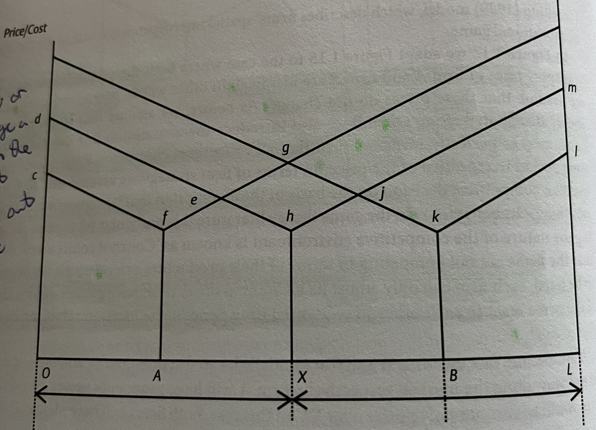
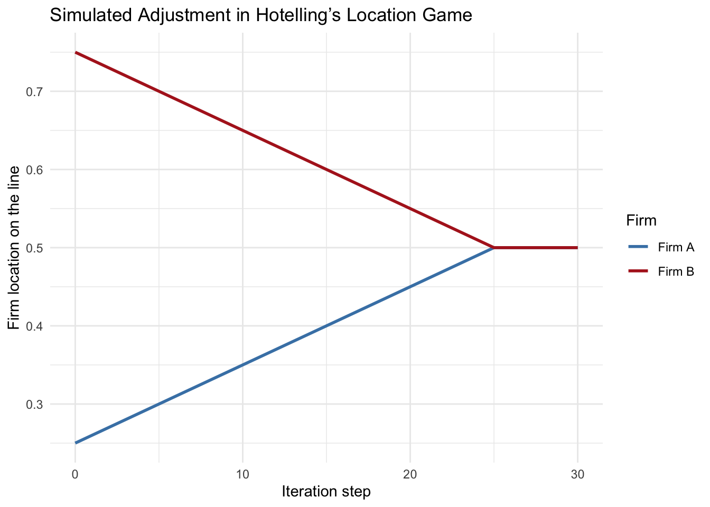

set.seed(123)Hotelling’s Game
Economic Geography
Economic Modelling
Two salesmen selling identical products walk into a bar…they sit side-by-side
The Hotelling Location Game: When Businesses Cluster and Why It Matters
In our previous posts, we have assumed that the market location is a single point in space. But this is not entirely realistic, as a market is much more than one single point; market areas frequently differ over space due to differences in population densities, differences in income distributions, and differences in consumer demand - just to name a few. Moreover, geography can confer monopoly power on firms, encouraging firms to engage in spatial competition such that they can acquire this monopoly power through locational behaviours.
In 1929, Harold Hotelling published a short but influential paper titled “Stability in Competition”. In it, he posed a deceptively simple question which provided a glimpse into how we might solve this problem: where should competing firms locate along a street to attract the most customers?
The Mechanics of The Model
Imagine you have two firms, A and B, located at points A and B along a one-dimensional market area (i.e., a line) defined by O and L. Assume that both firms produce an identical product (e.g., ice-cream vendors at a beach). The production costs for both firms can be assumed to be the same, for the purpose of this post. We can also assume that transport costs rise as we get farther from each firm. For the sake of simplicity, we can also assume that the transport rates (i.e., the transport cost function) are identical for both firms.
Thus, for any location at a distance \[d_a\] away from firm A, the delivered price of the good (i.e., ice-cream) is given by \[(p_a + t_ad_a)\]. And for any location at a distance \[d_b\] from firm B, the delivered price of the good is given as \[(p_b + t_bd_b)\].
If we assume that consumers (i.e., sunbathers / beach-goers) are evenly distributed along the line (i.e., beach), and we also assume that, consumers, being rational, will buy from the firm which is able to supply their good (i.e., ice-cream) at the lowest deliverable price, the total market area will be divided into 2 sectors, OX and OL.
The reason for this is that between points O and X, the delivered price for firm A, given as \[(p_a + t_ad_a)\], is always lower than that of firm B. On the other hand, at all locations between X and L, the delivered price of firm B, given as \[(p_b + t_bd_b)\], is always lower than that of firm A. You can see this more clearly in the below figure.

Although firm A is more efficient than firm B, and although both firms produce an identical product, firm A does not capture all of the market because the transport costs associated with shipping goods to market locations close to firm B increase the delivered price to an noncompetitive level in locations close to firm B. In other words, firm A cannot capture all of firm B’s consumers because it is too far away.
Implications for Firm Locations
Some other important implications arise from this model. Namely, the size of any firm’s market area will generally be larger the lower the production costs and the lower the transport rates are for the firm. In this sense, the existence of transport costs allows less efficient firms to survive by providing each firm with some monopoly power over particular market areas.
Location is an important way in which firms exercise monopoly power. If transport costs are a form of transaction costs, then we know (from the theory of the firm) that this can provide protection for inefficient firms as the costs of overcoming geography in order to conduct market exchanges become too large.
Firms which are located at great distances from each other, and which face significant transport costs will exhibit significant local spatial monopoly power. The existence of such power encourages firms to use location as a competitive weapon. This is particularly important in industries where firms do not compete primarily on price, but instead engage in non-price competition.
Playing Hotelling’s Game
In the simplest case of this, we can adapt the figure shown above so that both the production costs and transport rates of firm A and firm B are identical (i.e., \[p_a = p_b\] and \[t_a = t_b\]). We can further assume that these prices do not change, consumers are evenly distributed along OL, and make explicit the idea that the demand of consumers is perfectly inelastic (i.e., all consumers consume a fixed quantity per time period irrespective of price). Finally, each firm will base its decisions on the assumption that the other firm will not change its behaviour. In this specific sense, we can view Hotelling’s game as a game of sequential moves, where each player (firm) makes their decisions one-at-a-time.
Where does this leave us? Well, firms are not competing in terms of their production prices because they are assumed to be fixed. Each firm can only adjust its location to acquire greater market share. If the firms react to each other in sequential time periods, then the location game can be played.
The essence of the game plays out as follows:
If you assume that, along the line OL, one firm locates precisely in the middle of the half OX and the other firm locates precisely in the middle of the half XL, we see that straight away, both firms have monopoly power over 50% of the total market: OX is the territory of firm A while XL is the territory of firm B. This is the starting point of the game.
In pursuit of greater market share, firm A will want to move closer to firm B. In the extreme case, they might go so far as to move directly next to firm B. This can happen because all the customers to the left of firm A will always belong to firm A; thus, there is no risk of losing them by moving, there is only more to gain by capturing some of the market possessed by firm B.
Note
The same principle holds for firm B. The customers to their right will always belong to firm B because firm A, given its current location, cannot compete and capture these customers because firm B will always be closer.
Thus, at the first given opportunity, firm B will move leftwards.
In this example, firm A moves next door to firm B, and in doing so, captures the entirety of the market to its immediate left: firm A will always be closer to these customers than firm B. When it is firm B’s turn to “move”, firm B will act on similar incentives, and will thus move to the other side of firm A, therein swapping places (both locationally and in terms of market share) with firm A. These iterations repeat themselves until, eventually, both firms end up side-by-side at the midpoint of OL. At this point, greater market share cannot be acquired by any firm, meaning they stay put - concluding the game.
The core result of the Hotelling game for these two firms is that each will end up with precisely the same level of market share as they had in the beginning. But for consumers, quite a lot has changed. This result actually produces a fall in consumer welfare (relative to the starting point). How can we infer this? Recall that all consumers are assumed to consume a fixed quantity of goods per time-period and that there is no substitution possible. Therefore, the change in the delivered prices at each location will reflect the change in welfare of the consumer at each location.
This works out through two channels.
Firstly, the consumers located in-and-around the midpoint of OL benefit by generally reduced delivered prices, while those located closer to the edges stand to pay higher prices. The net effect of these welfare gains can be inferred in the below figure by examining the areas under the delivered price curves, which compare prices at the start (locations A and B) and at the end (location X) of the Hotelling game.

The bigger picture from this model appears to be that firms make more money, or at least charge higher prices once the game has been played out - creating a clear incentive to cluster when the conditions surrounding the game (i.e., assumptions about the nature of the competition between firm A and firm B) are realistic.
But in this situation, consumers stand to lose as the gains in welfare experienced by those fortunately located near the centre of the market does not appear to counter the welfare losses experienced by those closer to the edges.
A Practical Example
Let’s see how we might represent this logic empirically using R. We can simulate a simple version of Hotelling’s game. Suppose we have a line from 0 to 1 (our “beach”), with 1000 customers uniformly spaced. Two firms choose positions along the line, and customers go to whichever is closer. We can then calculate each firm’s “market share” based on its location.
Here’s a small simulation to illustrate. First, we will create a seed so that each of you can replicate this result exactly, should you wish
From there, we will commence creating our market world. To do this, we need to construct a line on which N number of customers are evenly spread:
# Create 1000 evenly spaced customer locations
customers <- seq(0, 1, length.out = 1000)Next, we can define where the firms are going to locate along this line. For the sake of illustration, lets first assume that firm A is at 25% of the line, while firm B is at 75%, as in the theoretical examples given above.
# Starting positions for the two firms
pos_A <- 0.25
pos_B <- 0.75Now, we need a function that calculates market share. The idea is straightforward: each customer compares the distance to firm A and the distance to firm B, and chooses the closer one:
# Function to compute market share for two firm positions
#market_share <- function(a, b) {
# share_A <- sum(abs(customers - a) <= abs(customers - b)) / length(customers)
# share_B <- 1 - share_A
# c(A = share_A, B = share_B)
#}
market_share <- function(a, b) {
dA <- abs(customers - a)
dB <- abs(customers - b)
A_strict <- sum(dA < dB)
B_strict <- sum(dB < dA)
ties <- sum(dA == dB)
share_A <- (A_strict + 0.5 * ties) / length(customers)
share_B <- (B_strict + 0.5 * ties) / length(customers)
c(A = share_A, B = share_B)
}Before doing anything else, let’s check the market share at the initial positions:
market_share(pos_A, pos_B) A B
0.5 0.5 At this stage, both firms have identical market shares as both capture precisely 50% of the market. If you want to create a deliberately assymetric starting point in this game, to see how it evolves under different conditions, all you need to do is change the values of pos_A and pos_B - but make sure both remain between 0 and 1.
In Hotelling’s logic, each firm asks: can I move a little and increase my market share? Thus commencing the game.
To simulate this behaviour, we will let firms adjust their positions step by step. At each step, each firm considers moving a tiny amount toward the middle of the line. If doing so improves its market share, it moves; if not, it stays put. This is not a formal solution algorithm — just an intuitive demonstration of how “creeping toward the centre” unfolds:
# A simple iterative adjustment process
positions_over_time <- data.frame(step = 0, A = pos_A, B = pos_B)
#The number of steps indicates how many moves you think the game needs before it is complete
for(step in 1:30){
# A small movement step
epsilon <- 0.01
# Try moving A slightly toward B
trial_A <- ifelse(pos_A < pos_B, pos_A + epsilon, pos_A - epsilon)
if(market_share(trial_A, pos_B)[1] > market_share(pos_A, pos_B)[1]){
pos_A <- trial_A
}
# Try moving B slightly toward A
trial_B <- ifelse(pos_B > pos_A, pos_B - epsilon, pos_B + epsilon)
if(market_share(pos_A, trial_B)[2] > market_share(pos_A, pos_B)[2]){
pos_B <- trial_B
}
# Store positions
positions_over_time <- rbind(
positions_over_time,
data.frame(step = step, A = pos_A, B = pos_B)
)
}Finally, we can visualise how the firms moved over time. If Hotelling’s intuition is correct, both should march steadily toward the centre of the market.
ggplot(positions_over_time, aes(x = step)) +
geom_line(aes(y = A, colour = "Firm A"), size = 1) +
geom_line(aes(y = B, colour = "Firm B"), size = 1) +
scale_colour_manual(values = c("Firm A" = "steelblue", "Firm B" = "firebrick")) +
labs(
title = "Simulated Adjustment in Hotelling’s Location Game",
x = "Iteration step",
y = "Firm location on the line",
colour = "Firm"
) +
theme_minimal()Warning: Using `size` aesthetic for lines was deprecated in ggplot2 3.4.0.
ℹ Please use `linewidth` instead.
Competing on Prices
The Hotelling result only holds as long as the firms do not compete in terms of prices. If price competition is possible, there is no Hotelling result.
The long-story-short about price wars in this context basically ends with firms sellling for zero profit while still being located at point X. In other words, price competition will drive prices down to the marginal costs of production, which is the typical equilibrium result in a competitive market.
The reason why this does not happen here is because this model is about monopoly power. Firms use locations as a means to generate greater monopoly power (i.e., market share) and they enhance their revenues by exploiting this power. Therefore, in situations where prices could spiral down, each firm will always have some incentive to move away such that they can retain parts of this power.
However, this creates a “Zugzwang” (to adopt the chess terminology) because neither firm has the incentive to move first. The firm which moves first is the firm which loses the largest market share - remember, they both take 50%! This makes a price war inevitable unless there is some mutual agreement made on the part of the firms.
Some Interesting Extensions
In industries where non-price competition dominates, prices are used to signal product quality, and to indicate the types of consumers for whom the good is intended. As such, prices tend to be fixed. Firms are unwilling to compete by lowering prices because this sends inappropriate signals to customers.
At the same time, engaging in non-price competition also implies that the products on offer are not identical, and therefore, you may question the relevance of the Hotelling result in the first place. However, as you will recognise from real-world experience, many of these so-called differences are in-fact quite superficial, involving primarily differences in packaging and appearance.
An interesting extension of the Hotelling model, which is a problem squarely concerned with geographical space, focuses on how these dynamics work across the product space (i.e., the variety of goods being sold). Digging into this problem specifically yields what is known as the Hotelling paradox; the idea that the mutual interdependence of firms often gives rise to firms producing basically identical products, selling them in the same place, while at the same time using non-price competition to make these products appear unique.
In these situations, firms will naturally tend to cluster together in space, and this is exactly how retail parks and central city shopping areas arise.
On the other hand, where firms produce identical products in which non-price competition is extremely difficult, such as the market for gasoline, firms will not cluster but instead opt for dispersion. Indeed, the oil companies which franchise or own gasoline stations will often agree not to co-locate too close to competitors in order to guarantee some market monopoly power for each station.
Wrapping Up
The takeaway message from the Hotelling game is that competing firms will only locate next to each other in situations where price competition is ruled out by collusion or by other forms of non-price competition. Yet, in these types of non-price competitive situations, clustering is the norm.
Within this framework, there are two analytical conclusions:
First, spatial industrial clustering can arise naturally when price competition is not paramount. In these situations, the market will be split more-or-less equally between all firms in the cluster. For firms which produce more-or-less identical products for which non-price competition is extremely difficult, firms will be encouraged to disperse.
Second, consumers located close to the spatial cluster of firms will tend to experience a welfare gain relative to those located farther away. This is because the costs of consuming the goods increases with distance; thus, the prices will increase as you get farther away from the cluster.
Bibliography
- McCann, Philip. 2013. Modern Urban and Regional Economics